Last updated: 2020-09-16
Checks: 7 0
Knit directory: APOEmedia/
This reproducible R Markdown analysis was created with workflowr (version 1.6.2). The Checks tab describes the reproducibility checks that were applied when the results were created. The Past versions tab lists the development history.
Great! Since the R Markdown file has been committed to the Git repository, you know the exact version of the code that produced these results.
Great job! The global environment was empty. Objects defined in the global environment can affect the analysis in your R Markdown file in unknown ways. For reproduciblity it’s best to always run the code in an empty environment.
The command set.seed(20200905) was run prior to running the code in the R Markdown file. Setting a seed ensures that any results that rely on randomness, e.g. subsampling or permutations, are reproducible.
Great job! Recording the operating system, R version, and package versions is critical for reproducibility.
Nice! There were no cached chunks for this analysis, so you can be confident that you successfully produced the results during this run.
Great job! Using relative paths to the files within your workflowr project makes it easier to run your code on other machines.
Great! You are using Git for version control. Tracking code development and connecting the code version to the results is critical for reproducibility.
The results in this page were generated with repository version 2381791. See the Past versions tab to see a history of the changes made to the R Markdown and HTML files.
Note that you need to be careful to ensure that all relevant files for the analysis have been committed to Git prior to generating the results (you can use wflow_publish or wflow_git_commit). workflowr only checks the R Markdown file, but you know if there are other scripts or data files that it depends on. Below is the status of the Git repository when the results were generated:
Ignored files:
Ignored: .Rhistory
Ignored: .Rproj.user/
Unstaged changes:
Modified: analysis/NeuronMediaAllPLSR.Rmd
Modified: analysis/index.Rmd
Note that any generated files, e.g. HTML, png, CSS, etc., are not included in this status report because it is ok for generated content to have uncommitted changes.
These are the previous versions of the repository in which changes were made to the R Markdown (analysis/NeuronMediaNAvsCond.Rmd) and HTML (docs/NeuronMediaNAvsCond.html) files. If you’ve configured a remote Git repository (see ?wflow_git_remote), click on the hyperlinks in the table below to view the files as they were in that past version.
| File | Version | Author | Date | Message |
|---|---|---|---|---|
| Rmd | 2381791 | rfleeman95 | 2020-09-16 | Comparing medias of NA and Cond on neurons (PLSDA) |
#This analysis is PLSDA of Neuronal media only and compares neurons treated with FRESH 50% astrocytic media/50% neuronal media with A-beta heterogeneous aggregates to neurons treated with 50% conditioned astrocytic media from astrocytes stimulated with a-beta/50% fresh neuronal media. So both have equal amounts of fresh neuronal media, just differing on fresh vs cond astrocytic media.
library(ggplot2)
library(factoextra)
library(mixOmics)
library(ropls)
library(dplyr)
library("workflowr")Warning: package 'workflowr' was built under R version 3.6.2setwd("/Users/BeccaFleeman/Box Sync/Proctor_Lab/Thesis/Thesis_Data/Luminex")
My_csv<-read.csv("NeuroTreatedwAstroOnly.csv",header=T,stringsAsFactors = F)
#Make a quantity only version, taking out the first and last column which are characters (patient and class)
My_csv_quant <- My_csv[,2:19]#Get Principal components; Scale is essentially creating z-score (https://www.r-bloggers.com/r-tutorial-series-centering-variables-and-generating-z-scores-with-the-scale-function/)
PC<-prcomp(My_csv_quant,scale=TRUE)
#Get scree plot (this extracts the eigenvalues/variances of dimensions. Eigenvalues correspond to the amount of the variation explained by each PC.)
#The scree plot is a plot of eigenvalues/variances against the number of dimensions
fviz_eig(PC)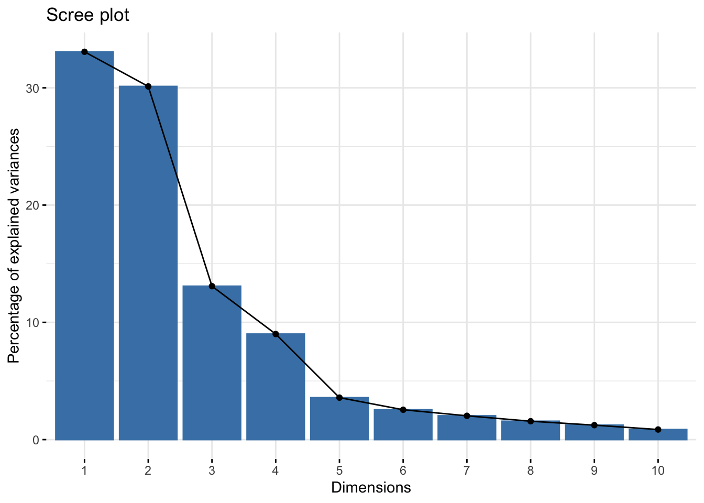
#create a class variable of what the classes/conditions in my csv are
#If using genotype:
class <- My_csv$Media[1:64]
unique(class) #shows you all your unique classes[1] "Conditioned" "Fresh" #if using condition of abeta:
#class <- My_csv$Condition[1:64]
#Create a data frame of your principal components with the classes you set
#here, "PC$x" is saying to use the "x" category found in PC; "class" is saying to correspond the class we set in the beginning with the PCs
My_csv_PC<-data.frame(PC$x,class)
My_csv_PC #view it PC1 PC2 PC3 PC4 PC5
1 -1.77660474 -0.61110175 -0.755625172 -1.17528442 0.29586804
2 -3.12487240 -2.35903818 -2.086263898 -1.44589598 0.49630035
3 -3.38787984 -3.45153575 -2.982923198 -1.50290093 0.52280096
4 -3.35801355 -5.01221402 -4.086459696 -1.39644751 1.06306423
5 -3.24973325 -2.26577622 -1.339745686 -0.67233486 0.95285776
6 -2.35878548 -3.65487444 1.457490918 -0.80101880 0.90543082
7 -0.67130343 -0.17699744 -0.507232989 -1.66248377 -0.76451954
8 -0.29980507 1.00650502 0.310280698 -1.85092219 -0.99610322
9 -1.28396525 -1.88892997 -0.995864376 -2.11446926 -0.68675944
10 -0.26704734 -0.45585448 0.182382749 -1.18336004 -1.43132167
11 -1.71469238 -1.41322955 -0.188914267 -0.59822330 0.56275010
12 2.72453759 -10.07536779 8.127914945 -1.96262496 -0.57985334
13 -1.09190444 1.26184895 -0.120513899 -0.99392829 -0.22399708
14 -0.74161344 1.39136504 0.040276701 -1.51980375 -0.69484641
15 -1.53919265 -0.69710304 -0.050451805 -1.45679986 -0.20547157
16 -0.49202027 2.28175079 1.488769434 -0.74995333 0.17628342
17 -0.54118848 2.07317257 1.266843885 -0.49640363 0.37343298
18 -0.89638110 0.72520844 0.005540925 -1.49898396 -0.71310954
19 0.02214274 2.09533561 -0.324598969 -1.56685491 -0.58076644
20 -0.21953652 2.22341189 -0.619408915 -1.21126588 -0.35881955
21 0.16985024 2.38117006 -0.678953384 -1.78901912 -1.10970764
22 -0.23344890 2.58096831 0.038612057 -0.92151292 -0.04539699
23 -0.55736271 2.50294106 0.281618416 -0.56041230 0.43957179
24 -1.03392709 2.34559215 0.724645674 -0.01329190 0.58448655
25 0.64531038 2.50838020 -1.086205109 -2.08579524 -1.15329781
26 4.00099335 0.12151817 -1.789320807 0.93551316 1.44036961
27 4.58288228 -0.50270194 -0.962957466 0.15566300 0.56431236
28 3.98057882 -0.04481982 -0.217462641 -0.38936963 1.32943130
29 3.90727342 -0.37615280 -0.645751572 -1.20561462 0.59907261
30 3.88966992 -0.04710287 -0.689928720 -0.74039105 0.62285882
31 3.38260470 0.26316726 -1.062724533 0.26667906 0.44116525
32 5.70232436 -1.72324395 -1.759063666 0.75588480 -0.53604476
33 6.01629685 -2.66575448 -0.876807581 1.09355285 -0.93877192
34 4.90855273 -1.13011013 -0.059259632 -0.41608304 0.15088157
35 5.15937733 -1.31677210 -0.149818772 0.13406690 0.22473648
36 3.84346913 0.29794988 -0.551235191 0.15357557 1.17665824
37 4.43405241 -0.93488893 -1.036794791 1.60342761 -0.05838383
38 2.03490249 2.41776073 -1.610968583 1.04984859 -0.69760568
39 -0.95600696 -1.33934230 0.238129059 1.37394409 -1.30998811
40 -2.74135333 -4.47480722 -1.480915486 2.83317042 -1.10487980
41 -2.75601573 -3.08112317 -1.615289880 1.70529119 -0.35570861
42 -1.60592842 -0.05268151 -0.498715175 2.15053826 -0.15867505
43 -2.45931022 -1.38130911 0.939944736 2.22478468 1.58423600
44 -3.10410381 -2.60687843 0.256702188 1.69252963 1.21105121
45 -1.58535913 -0.64705414 0.273948864 1.06560693 0.38896189
46 -0.86519165 0.93681729 0.203365534 0.87916253 -0.32909515
47 -0.90960509 0.42956535 -0.083440242 0.34084500 -0.54287545
48 -1.21112594 -2.00443503 -0.915255279 1.96076751 -2.06193952
49 -0.35237555 0.72160134 0.387480404 2.04465723 -1.46751277
50 -1.60103863 0.74070742 0.863269975 0.82352947 1.21091249
51 -0.90046730 1.45690102 0.598178363 0.50709726 0.56134748
52 -0.74826136 0.80304824 1.202687213 1.33129582 -0.43070529
53 -0.44998971 2.20755909 0.894896832 0.19383824 -0.04175068
54 -0.85481305 1.48244763 0.780112697 -0.06877673 -0.04474311
55 -0.66590465 1.86430683 0.481553117 1.41093960 -0.70775143
56 -0.78257038 0.18178655 0.607464604 2.24251894 -0.80222246
57 -0.92573431 2.44728947 1.725391732 0.77992815 0.85866418
58 -0.70449591 2.69466461 1.343654008 0.32920055 0.44568729
59 -0.61294238 1.85790568 1.324589874 0.25112300 0.12985312
60 -0.69162717 1.92462415 1.353016354 0.15047707 0.59640234
61 -0.83975155 1.62856623 0.539636721 0.68524136 -0.15631695
62 -0.52726343 1.67426077 0.838538630 -0.23351393 0.24948242
63 -0.78857043 2.41381329 1.326542340 0.37911345 0.27134489
64 -0.92573431 2.44728947 1.725391732 0.77992815 0.85866418
PC6 PC7 PC8 PC9 PC10
1 0.22752923 0.265794643 0.6455437820 -0.655502351 -0.602090216
2 0.47342438 0.011011447 -0.0926618640 -0.240494498 -0.194842460
3 -0.02124675 -0.346516922 -0.2220964155 0.296104912 0.697347024
4 -0.45009695 0.613348725 -0.0028911477 0.089205210 0.604376902
5 0.61825464 0.177173821 -0.9457483489 0.424801760 0.354223275
6 0.83573115 -0.106579570 -0.4568066294 -0.693329989 0.226305139
7 -0.93733258 0.004557836 0.1795030186 0.205743223 0.430288059
8 -0.52369885 0.241722376 0.1980853503 -0.349905672 0.442301480
9 -0.22936539 -0.606546594 -1.5163348294 -0.423975429 -0.755861034
10 -0.30100734 -0.337170213 0.2383282117 -0.091695195 0.413328837
11 0.62130861 1.021649366 0.0122513235 1.050995359 0.428347806
12 0.82951524 0.076637905 0.3678811263 -0.174687906 0.047121418
13 0.02129053 1.004821216 0.5016727766 0.045277243 -0.925203593
14 -0.60083183 0.016463893 -0.0288208935 -0.409682596 -0.043215994
15 0.29206532 0.475031775 0.7101832950 -0.531318138 -0.745264620
16 0.78362952 -0.016930734 -0.4217833675 -0.320775989 0.047521773
17 0.62405587 0.177217959 -0.6048552068 -0.127007647 0.267927936
18 -0.33628236 0.078932656 -0.5177155525 -0.281604567 -0.174218798
19 0.07449910 -0.532644801 0.2502391153 -0.063942677 0.194758107
20 0.52171093 -0.429633173 0.4576638826 0.482241014 -0.344627300
21 -0.53727625 -0.421352839 0.4250057121 0.268539602 0.194937425
22 1.05553770 -0.450317752 0.0719554854 0.399584571 0.103136727
23 1.51161984 -0.496714551 0.2839060135 0.171354899 -0.487775283
24 0.87318490 0.692468251 0.5529081108 0.447129434 -0.859914738
25 -0.33376937 -1.054905393 0.8346407395 0.230213926 -0.096384743
26 0.71735180 -0.261987197 -0.2860114532 -0.890120407 -0.190413020
27 0.14300116 0.257228820 0.0008954568 -0.351711286 0.842054045
28 0.16617283 0.131531685 -0.3246197650 0.236664702 0.282566925
29 -0.54383604 0.199495676 0.2822971404 0.058122654 -0.086998051
30 -0.46434898 0.021737193 0.1336261702 0.212564341 -0.418240358
31 -0.91984346 0.999249162 -0.3357397155 -0.221473472 -0.104161776
32 -0.40351526 0.053070918 0.1038168595 -0.857996741 -0.008735979
33 -0.05118686 -0.187975556 0.2276265603 -0.004579462 0.274713467
34 -0.60603874 -0.777821569 0.1071250039 1.655926306 -0.430929572
35 0.03024042 -0.655941106 -0.2663177339 0.773096738 -0.177653947
36 0.20522228 0.194957875 -0.1478018961 0.154415813 -0.293430686
37 -0.23696218 1.163755295 -0.1871470141 -0.515945133 -0.331737078
38 2.85716858 -1.662199085 0.4440495331 -0.581263729 0.651311922
39 -0.47808811 -0.036850788 -0.0222986152 0.478648868 0.389064296
40 0.42207515 -0.327130767 0.3856428880 0.848277685 -0.342584701
41 0.55098391 0.013319016 -0.1267435922 0.067297736 -0.566623692
42 0.69901575 1.241005566 1.3913910551 -0.428303593 0.609362933
43 -0.78199589 -1.046181460 1.5076604884 0.416702453 0.014217508
44 -1.39769656 -2.106122282 0.2340012725 -1.048192377 -0.464867037
45 -0.15659745 0.454475579 0.6489553126 -0.012275567 0.142690126
46 -0.45388930 0.289106649 -0.0007372662 -0.492865324 -0.223072039
47 -0.74177591 0.700878167 0.8848097947 0.069585434 -0.081093829
48 -0.26974243 -0.214547718 -1.0394339195 -0.067075509 -0.313978684
49 0.35927550 0.658429089 -0.1343499747 0.023937554 0.231189210
50 -0.17418240 0.107977995 -0.1522829153 0.509958911 -0.008355713
51 0.41894798 0.395255504 -0.5439167882 0.158038194 -0.372469334
52 -0.56538773 -0.313731548 -0.0966086813 -0.025389442 0.096593159
53 0.02856337 0.644057170 -0.2509094188 0.234016241 0.135175888
54 -0.64405330 0.249143600 0.2143578153 -0.022269032 0.459704527
55 -0.01888655 0.320842257 -0.2872774616 -0.523292346 0.142427246
56 0.37492957 -0.160668809 -1.3307299764 0.669024277 -0.149008466
57 -0.84464554 -0.657177258 -0.2289379409 -0.178405805 0.216559687
58 -0.22811223 0.031651700 -0.3894025247 0.464399168 0.254930684
59 -0.35773733 0.130952050 -0.3719738312 0.065004707 0.310612063
60 -0.43401279 -0.005063047 -0.1806491750 -0.125956046 0.394839395
61 -0.16275936 0.448350876 0.1192524935 -0.203678982 -0.350797155
62 -0.41100368 0.103302058 -0.4991824233 -0.075694969 0.113957696
63 0.12554603 0.203282218 -0.1735515092 -0.038055253 -0.085902476
64 -0.84464554 -0.657177258 -0.2289379409 -0.178405805 0.216559687
PC11 PC12 PC13 PC14 PC15
1 0.41925102 0.745295630 0.174703107 0.204053950 0.01716793
2 -0.14409441 -0.283243886 0.127814534 -0.227397749 0.29415377
3 0.08288164 -0.029865948 -0.711367057 -0.424347298 0.18852424
4 0.30505263 0.727446963 0.426171374 0.069891118 -0.23537707
5 -0.36502650 -0.483126658 -0.069232114 -0.160077365 -0.23401490
6 0.08855410 -0.567153079 0.170607042 -0.286545568 0.41698999
7 -0.09781798 0.220127621 -0.391673265 -0.405823769 -0.66934134
8 -0.07631757 -0.241870791 0.353440086 0.299013628 -0.04248154
9 -0.27340442 0.087083560 0.197308325 0.323860167 -0.24864611
10 1.04776527 -0.256476199 0.363681350 0.237678212 0.21770429
11 -0.46230785 -0.358764083 0.147236870 0.225753023 -0.49507064
12 -0.35229882 0.372744705 -0.191042968 0.004305545 -0.16554723
13 -0.05440157 -0.001593935 0.448810737 -0.129344922 0.09129136
14 0.26876425 0.041964078 -0.419000970 0.162947543 -0.04850483
15 0.32354974 -0.886744335 0.387178822 0.256160325 -0.22054928
16 0.43822539 -0.484541384 -0.493349311 -0.332653956 -0.09576062
17 0.39863331 0.170632652 -0.161989427 -0.211118552 0.32768366
18 0.40666460 0.253041484 -0.006230201 0.105504632 0.01673918
19 -0.01197026 -0.086740468 0.025734639 0.054976981 0.19136780
20 -0.28782309 0.015327663 0.112984970 0.070779200 -0.31000963
21 -0.33309554 0.018602900 -0.003517590 0.015829712 0.02887881
22 0.16276608 0.337403390 -0.021861198 0.067536252 0.13281972
23 0.19181226 0.179622450 0.125285211 -0.178527455 0.04627566
24 -0.01291407 0.065973723 0.243161270 -0.465856515 -0.03259642
25 -0.68561152 -0.108875002 0.010089739 -0.156325307 0.20420957
26 0.22556698 0.166379248 -0.220592550 0.446106978 -0.44867129
27 -0.29554288 -0.075655949 0.874728664 -0.226814455 0.16955119
28 0.11646974 -0.065592086 -0.165103776 0.472604932 0.24164713
29 -0.64937197 0.062388285 -0.470648847 0.446539913 0.30570373
30 -0.11727977 -0.478029150 -0.408761828 0.491729030 0.31658495
31 0.01076604 0.089463554 0.002356573 -0.608797738 -0.23700087
32 -0.44756822 -0.015551628 -0.177176749 -0.082518501 0.04144322
33 -0.09692713 0.408974272 0.383454916 -0.362033383 0.02578989
34 0.64234825 0.090013764 -0.019500508 -0.176982653 -0.41827385
35 0.63587009 -0.002007667 -0.062701205 -0.186883071 0.19878875
36 0.25009519 -0.517673518 -0.198370858 0.242138134 -0.13679746
37 0.16223947 -0.313986479 0.195309265 -0.337442461 0.18010215
38 -0.36924286 0.091589555 0.086410295 -0.052028445 -0.20497686
39 0.36974447 -0.187988980 0.605299760 0.103128275 0.16926050
40 0.59247286 -0.454815826 -0.312983342 0.024807419 0.23181098
41 -0.41357721 0.993277935 -0.464164618 0.263367313 0.39819209
42 0.35235993 -0.153015213 -0.419032574 0.313834997 -0.20805181
43 -0.07244296 0.271757360 0.059992728 -0.001910841 0.08335153
44 0.07142235 -0.462539125 0.127368254 -0.157648733 -0.23539370
45 -0.17174894 -0.196761885 0.066156661 -0.046972458 0.16786120
46 0.29282727 0.492141970 -0.046891938 0.087809899 -0.31938618
47 -0.83259768 -0.162047769 -0.279850379 -0.317101260 0.20184614
48 -0.36843527 -0.070454503 -0.162009796 -0.004552894 0.07552431
49 0.21646187 0.043031575 0.153653946 0.167034096 -0.25369350
50 -0.77976672 0.197769221 0.698864950 0.480207032 -0.07252675
51 -0.03507277 0.425129880 0.094673331 0.019138024 0.19326429
52 0.36983045 0.108383442 0.185053055 0.242756581 -0.05697496
53 0.07862942 0.137851353 0.024996513 -0.138029037 0.20356598
54 0.11895549 -0.234240162 -0.412344802 0.445772269 0.11509395
55 -0.19127332 0.346685117 -0.297944750 0.003484755 -0.22353633
56 -0.51606627 -0.447861638 0.198053072 0.153812864 -0.12223138
57 -0.18175888 0.038668705 0.133275790 -0.083198673 -0.02631258
58 0.13436340 0.274277910 -0.301620298 0.058776544 -0.06552864
59 -0.17095633 -0.135195149 0.029650641 0.290469415 0.37264234
60 0.19253936 -0.106147320 -0.075116020 -0.106100427 -0.18285748
61 -0.31127228 -0.319418649 -0.301166580 -0.409933018 -0.12632069
62 0.33454370 0.624167883 0.184282780 -0.272003530 0.39110479
63 0.05831734 0.052091905 -0.285819541 -0.219640056 -0.09418855
64 -0.18175888 0.038668705 0.133275790 -0.083198673 -0.02631258
PC16 PC17 PC18 class
1 -0.135122271 -0.054177222 0.077614199 Conditioned
2 0.223253567 0.037151283 0.171582148 Conditioned
3 -0.200195057 0.119764477 0.082150649 Conditioned
4 0.042332712 0.122945540 -0.187706134 Conditioned
5 0.185340147 -0.144109807 0.035479503 Conditioned
6 0.113793145 -0.245268232 -0.168641574 Conditioned
7 -0.294720528 -0.204740501 -0.101222652 Conditioned
8 -0.059061463 -0.127765698 0.072366770 Conditioned
9 0.238017415 -0.003700195 -0.131919116 Conditioned
10 0.159008507 0.075064532 0.167280220 Conditioned
11 0.026458143 0.026831687 0.226967532 Conditioned
12 -0.002021472 0.076413524 0.034551197 Conditioned
13 -0.080590015 0.052314984 0.132149267 Conditioned
14 -0.003351177 -0.150247576 0.007686889 Conditioned
15 -0.228665846 0.026913010 -0.036206713 Conditioned
16 -0.134289427 0.124090072 -0.064506120 Conditioned
17 0.211363503 0.033463492 0.025463265 Conditioned
18 -0.104810121 -0.160568923 -0.004310945 Conditioned
19 -0.063127273 0.147436239 -0.102392467 Conditioned
20 0.002576667 0.057093105 -0.007636712 Conditioned
21 -0.031948810 -0.011687410 -0.027601658 Conditioned
22 -0.042529526 -0.031413417 -0.073197248 Conditioned
23 0.061667427 0.082857683 0.009829368 Conditioned
24 0.091443417 -0.110664054 0.021896503 Conditioned
25 0.209421580 0.149702338 -0.101750263 Conditioned
26 -0.158896834 0.330139254 0.207900025 Conditioned
27 -0.142389018 0.158117657 0.080026097 Conditioned
28 -0.070526460 0.108890764 -0.085773597 Conditioned
29 -0.034502956 -0.005211390 -0.027849038 Conditioned
30 -0.277029762 -0.282493232 0.120246472 Conditioned
31 0.121712526 -0.274992474 0.101066621 Conditioned
32 0.325265319 0.112721697 0.150185671 Conditioned
33 -0.234511414 0.003192297 -0.098791996 Conditioned
34 0.276538899 0.087181456 -0.050169260 Conditioned
35 0.040646907 -0.112172984 0.008757644 Conditioned
36 0.203119709 -0.016250034 -0.191878873 Conditioned
37 -0.088999672 -0.201750133 -0.184964573 Conditioned
38 -0.007496935 -0.305407246 0.016178123 Conditioned
39 -0.163494110 0.002201432 0.060342611 Fresh
40 -0.131799102 0.042343736 0.020271103 Fresh
41 -0.085563399 -0.100618857 -0.001723994 Fresh
42 0.181029584 -0.015749580 -0.102003580 Fresh
43 0.070237975 -0.201167165 0.050797954 Fresh
44 -0.189731801 0.116206983 -0.078124228 Fresh
45 0.340288824 0.134575687 -0.040686855 Fresh
46 0.306255696 -0.134740909 0.061283592 Fresh
47 -0.064322550 0.179400475 -0.062906875 Fresh
48 0.052807875 -0.046283805 0.128015197 Fresh
49 -0.094788197 0.012110516 -0.044301275 Fresh
50 -0.112456874 -0.155014473 -0.099071146 Fresh
51 -0.169367725 0.189505732 -0.110537599 Fresh
52 0.240898268 0.033686899 -0.062546236 Fresh
53 -0.019139350 0.167802949 -0.084402408 Fresh
54 0.048629036 -0.010382607 -0.035667387 Fresh
55 0.161718441 0.149877000 -0.119268201 Fresh
56 -0.145729113 0.116759981 -0.022650028 Fresh
57 0.064706518 -0.005012551 0.099566933 Fresh
58 -0.039110184 -0.064942538 0.116476099 Fresh
59 0.136597457 -0.097956137 -0.020207647 Fresh
60 -0.216193540 -0.012525154 -0.006952001 Fresh
61 0.005729967 0.125368213 0.054621294 Fresh
62 -0.111457968 0.060306058 0.087769750 Fresh
63 -0.267625798 0.029596105 0.009478776 Fresh
64 0.064706518 -0.005012551 0.099566933 Fresh#This plots your principal components based on which ones you pick
ggplot(My_csv_PC,aes(x=PC1,y=PC2,col=class))+
theme_set(theme_grey() + theme(legend.key=element_blank())) +
geom_point(size=3,alpha=0.8) +
theme(axis.text.y=element_text(colour="black",size=13))+
theme(axis.text.x=element_text(colour="black",size=13))+
theme(axis.title.y=element_text(size=12))+
theme(axis.title.x=element_text(size=12))+
theme(panel.grid.major = element_blank(),panel.grid.minor = element_blank())+
theme(panel.background = element_blank())+
theme(axis.line = element_line(colour = "black",size=0.5))+
theme(legend.title = element_blank())+
theme(legend.key.size = unit(0,'lines'))+
theme(legend.justification = c(0,1), legend.position = c(0.01,1))+
geom_hline(yintercept = 0, linetype="dashed", color="black",size=0.5)+
geom_vline(xintercept = 0,linetype="dashed",color="black",size=0.5)+
#geom_text(aes(label=class),hjust=0, vjust=0) #this would label all points
#geom_text(aes(label=ifelse(PC2>6,as.character(class),'')),hjust=0,vjust=0)+ #this labels all outlier ish points here on PC2
#xlim(-10,10)+
ylim(-12,5)+
scale_colour_manual(values = c("blue","darkorange"))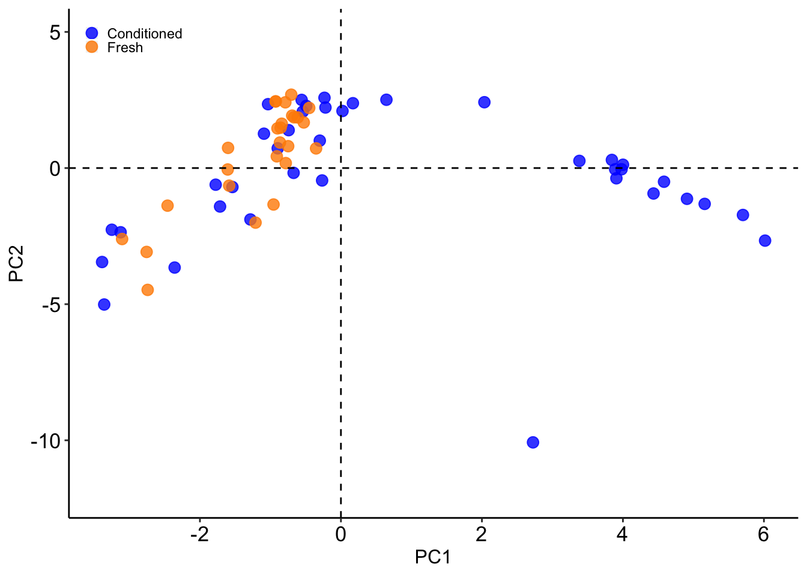
#shows loadings; note, if you get rid of the two hashtags below(infront of loading...TRUE and length...PC1), it will sort by #
Loadings_PC1=PC$rotation[,1]
Loadings_PC1=sort(Loadings_PC1,decreasing=TRUE)
PC1Length <- length(Loadings_PC1) #this gives you length (number of variables)
Load_PC1=as.matrix(Loadings_PC1[1:PC1Length])
Load_PC1=t(Load_PC1)
barplot(Load_PC1,col="grey89",las=2,ylim=c(-0.4,0.4))
abline(h=0)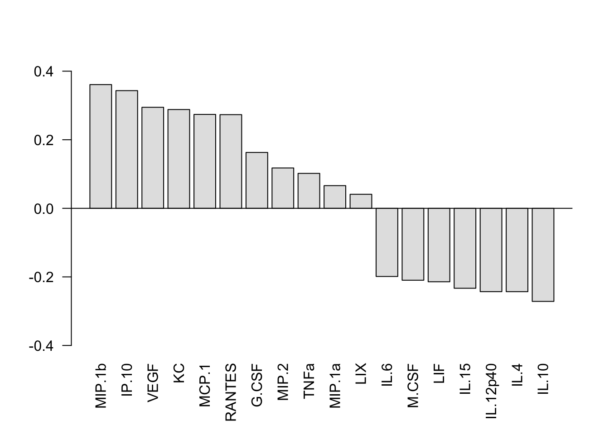
Loadings_PC2=PC$rotation[,2]
Loadings_PC2=sort(Loadings_PC2,decreasing=TRUE)
PC2Length <- length(Loadings_PC2) #this gives you length (number of variables)
Load_PC2=as.matrix(Loadings_PC2[1:PC2Length])
Load_PC2=t(Load_PC2)
barplot(Load_PC2,col="grey89",las=2,ylim=c(-0.6,0.2))
abline(h=0)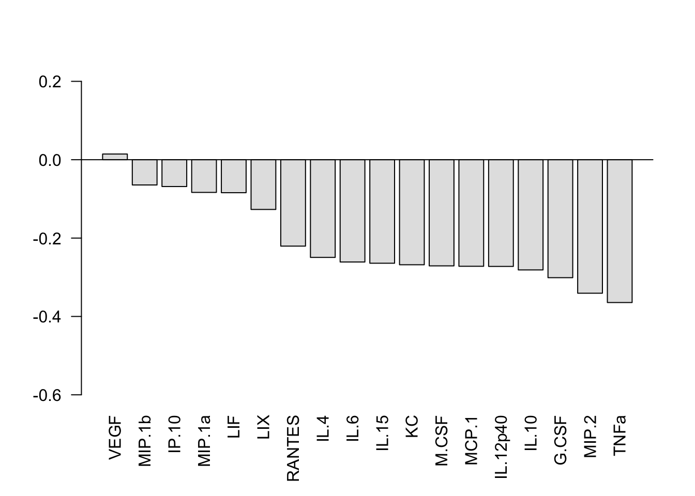
Loadings_PC3=PC$rotation[,3]
Loadings_PC3=sort(Loadings_PC3,decreasing=TRUE)
PC3Length <- length(Loadings_PC3) #this gives you length (number of variables)
Load_PC3=as.matrix(Loadings_PC3[1:PC3Length])
Load_PC3=t(Load_PC3)
barplot(Load_PC3,col="grey89",las=2,ylim=c(-0.4,0.4))
abline(h=0)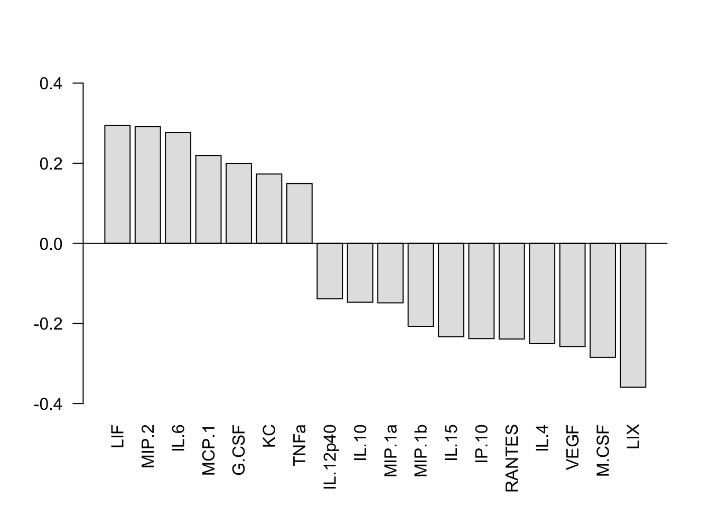
#Turn your class variable from characters (pre/post; APOE3/APOE4) to factors (1/2)
class(class)[1] "character"class<-as.factor(class)
class(class)[1] "factor"unique(class)[1] Conditioned Fresh
Levels: Conditioned Fresh#Cross Validation to tell us which number of LV to choose
##**Note, dont have to change based on data, only have to change if you want diff cv parameters
k_folds <- 3 #this is how many folds we will split out data into
n_LV <- 1:5 #this is the range of LV we will try to model with to get an error for
nrepeats <- 1:10 #going to repeat the 3-fold ten times so a total of 30 test sets are taken
nrepeat_results <- matrix(NA, ncol=5,nrow=30) #makes a big matrix of 5 column (one for each # of LV model),
#and 30 rows (for each LV model). 30 = (10 nrepeats) * (3 k_folds)
#matrix will contain error rate of each fold left out for calculation of a Standard Error
error_groups=matrix(1:30, ncol=3, nrow=10,byrow = TRUE)
# This creates a matrix to be written in for each loop.
# It is used to fill in big matrix appropriately with each little error matrices of the inner loop
# You can do it 100x or 10x, to do 100x, nrepeats should be 1:100,
# nrepeat_results matrix should have 5col and 300 row
# error_groups matrix should have 1:300 (3 columns and 100 rows)
# to do 10x, nrepeats should be 1:10
# nrepeat_results matrix should have 5col and 30 row
# error_groups matrix should have 1:30 (3 columns and 10 rows)
for(n in nrepeats){
# First, need to make a list with numbers 1:3 with length of dataframe.
# AKA code below assigns each data sample a random group of which "fold" to be in
folds_i <- sample(rep(1:k_folds, length.out = nrow(My_csv_quant)))
# Next, make a matrix to fill in with error. # of rows is fold #, # of columns are range of LVs tested
cv_error <- matrix(NA, nrow = k_folds, ncol = length(n_LV))
for (k in 1:k_folds) {
test_i <- which(folds_i == k) #chooses which rows will be in the k fold are we doing (will be an int list of 1/3 of the data)
train_set <- My_csv_quant[-test_i, ] #train set is the rows that were not used for test_i (will be an int list of other 2/3 of the data)
test_set <- My_csv_quant[test_i, ] #test set is the random test_i samples chosen but linked with My_csv_quant
condition_test <- class[test_i] #condition here is just what "class" test data was in
condition_train <- class[-test_i] #condition here is what class training data was in
for (i in n_LV){
PLSDA_train_iLVs <- opls(train_set, condition_train, predI = 1, orthoI = (i-1), fig.pdfC=NULL, info.txtC=NULL, scaleC='standard', crossvalI=8)
#this just ran ONE pls on the training set (2/3 of the data). *each iteration will use a diff number of LV (i-1)
predictions <- predict(PLSDA_train_iLVs, test_set)
#this used the PLSDA above to predict the test set condition
cv_error[k,i] <- 1-mean(as.numeric(condition_test==predictions))
#this is telling it to fill out the cv_error matrix that you made with whether it got it right or wrong
}}
nrepeat_results[error_groups[n,],1:5] <- cv_error
#this is putting the cv_error you just got into the nrepeat_results big matrix you made
}
CVrepeated_error_averages <- matrix(NA,ncol=1,nrow=5) #makes a new matrix to average the results of the error for each LV
for (i in 1:ncol(nrepeat_results)){
CVrepeated_error_averages[i,1] <- mean(nrepeat_results[,i])
}
plot(CVrepeated_error_averages[,1],main="Classification Error, 3-fold CV repeated 10 times", xlab="Latent Variable #", ylab="Classification error rate",ylim=c(0,1))
lines(n_LV, CVrepeated_error_averages[,1], lwd = 2)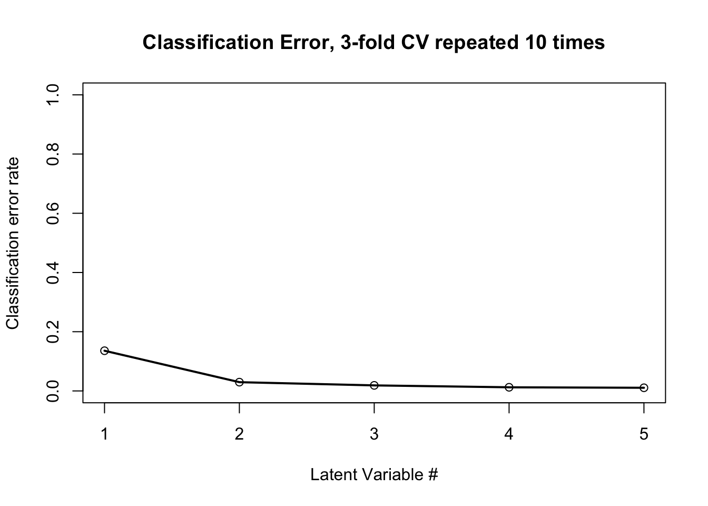
#CHANGE BASED ON CV!!!
#do pls in ropls, the pred 1 is always 1, orthoI is the number of orthogonalized LV that you want.
#if you set orthoI=0, you will be doing 1 LV. Leave crossvalI at 8, unsure why though
oplsda<-opls(My_csv_quant,y=class,predI=1,orthoI=1,crossvalI=8)OPLS-DA
64 samples x 18 variables and 1 response
standard scaling of predictors and response(s)
R2X(cum) R2Y(cum) Q2(cum) RMSEE pre ort pR2Y pQ2
Total 0.425 0.807 0.759 0.221 1 1 0.05 0.05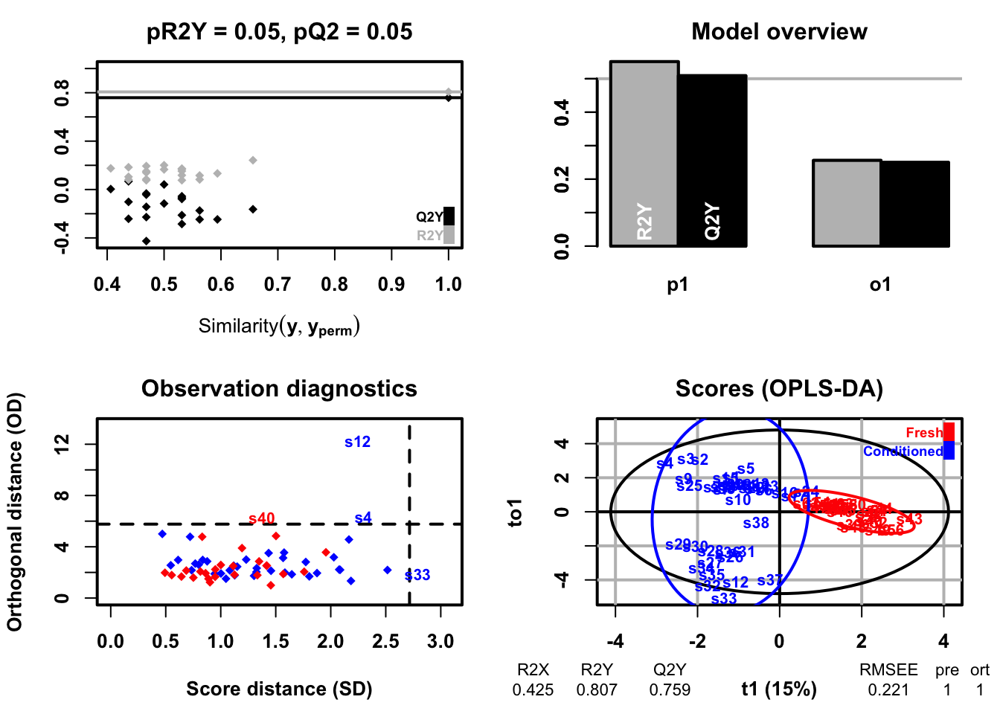
#if using condition instead of class, must do PLS-DA not opls
#oplsda<-opls(My_csv_quant,y=class,predI=1,orthoI=1,crossvalI=6)
#SCORES PLOT:
Scores <- getScoreMN(oplsda)
oScores <- oplsda@orthoScoreMN
Scores_Class <- data.frame(Scores, oScores, My_csv$Media)
colnames(Scores_Class)<- c("LV1", "o1", "Media") #add as many o's as needed here
ggplot(Scores_Class,aes(x=LV1,y=o1,col=Media))+
#theme_set(theme_gray() + theme(legend.key=element_blank())) +
geom_point(size=2,alpha=0.8)+
theme(axis.text.y=element_text(colour="black",size=12))+
theme(axis.text.x=element_text(colour="black",size=12))+
theme(axis.title.y=element_text(size=12))+
theme(axis.title.x=element_text(size=12))+
theme(panel.grid.major = element_blank(), panel.grid.minor = element_blank())+
theme(panel.background = element_blank())+
theme(axis.line = element_line(colour = "black",size=0.5))+
theme(legend.title=element_blank())+
theme(legend.key.size = unit(0, 'line'))+ ##
theme(legend.justification=c(0,1), legend.position=c(0.02,.98))+
theme(legend.text=element_text(size=12))+
scale_colour_manual(values = c("blue","darkorange"))+ #need to label accordingly
geom_hline(yintercept=0, linetype="dashed",
color = "black", size=0.5)+
geom_vline(xintercept = 0, linetype="dashed",
color = "black", size=0.5)+
stat_ellipse(type = "t")+ #default 95% confidence ellipse
xlim(-5,5)+
ylim(-8,8)+
xlab("Scores on LV 1 (15.0%)") + #change this to match input LV!!!
ylab("Scores on LV 2 (42.5%)")+ #change this to match input LV!!!
theme(plot.title = element_blank()) +
theme( panel.background = element_rect(colour = "black", size=1))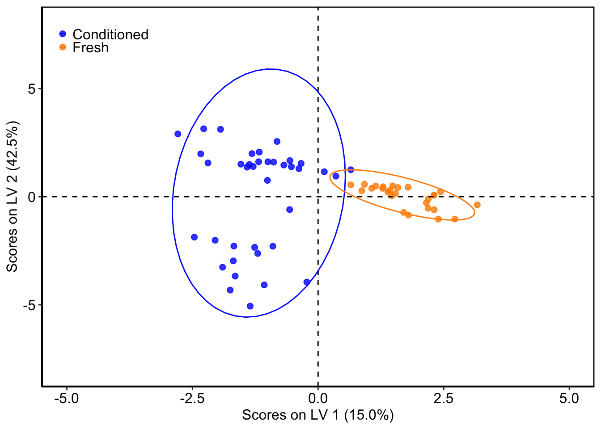
#Get the LV Loadings:
#to add more stuff to plot, use ?par
Load<-getLoadingMN(oplsda)
Loadsort<-sort(Load,decreasing=TRUE)
Loading<-t(Load)
barplot(Loading, col="grey89", las=2, ylim=c(-0.6,0.6), ylab="LV1 (Component) 15.0%", font.lab=2)
#!!CHANGE TITLE AND LV %
abline(h=0)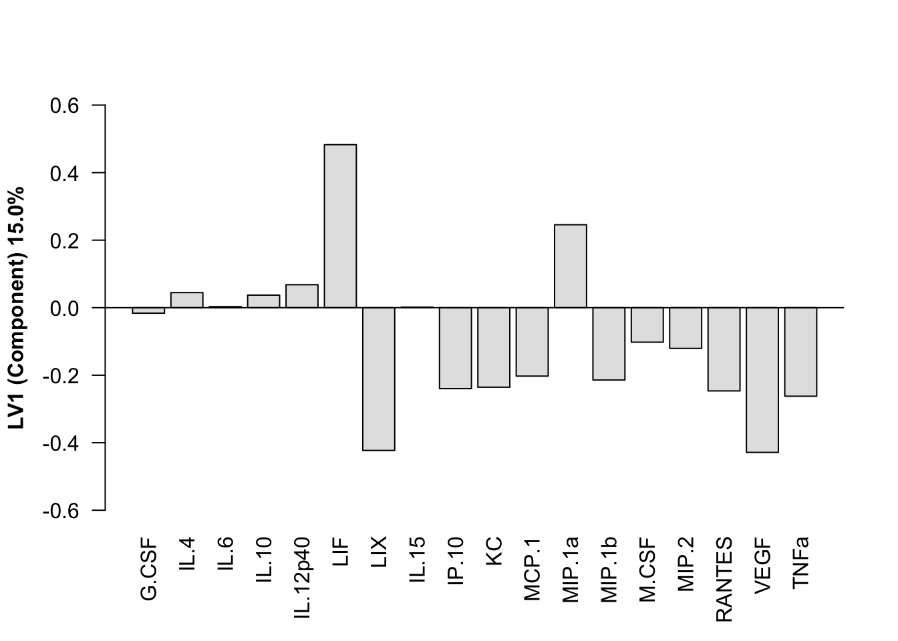
VIP<-getVipVn(oplsda)
VIPsort=sort(VIP,decreasing=TRUE)
barplot(VIPsort, col="grey89", las=2, ylim=c(0,2.5), main= "VIPs", cex.main=1.5, ylab="LV1 (Component) 15.0%", font.lab=2)
#!!CHANGE TITLE AND LV %
abline(h=1)
abline(h=0)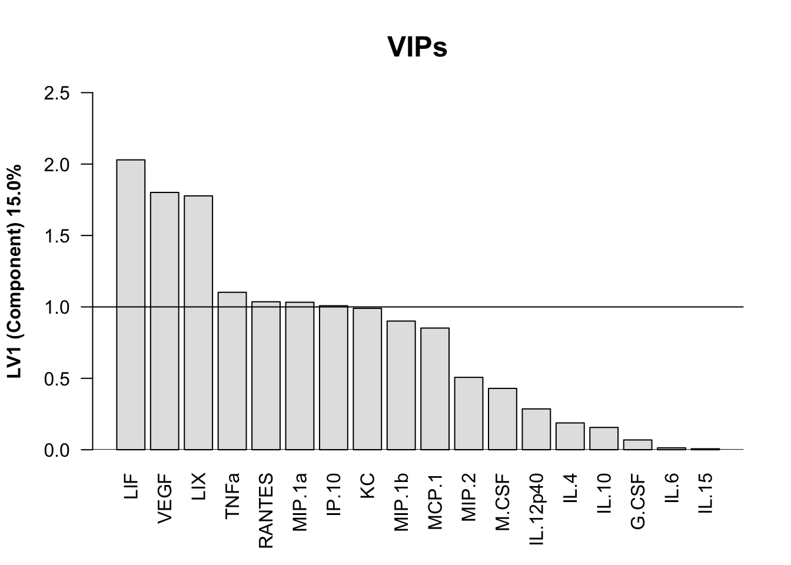
#VIPmatrix <- as.data.frame(VIP)
#orderedVIPmatrix <- as.data.frame(VIPmatrix[order(VIP),])
#Significance (compare to random) MAKE SURE TO CHANGE # of LV for what you used in model!
#Significance allows us to compare our model error (from CV) to what a "random model" would have for error
#This gives us "significance" or "confidence" in our model
avg_allrandom<-matrix(nrow = 100, ncol = 1) #makes a matrix of 100 rows, 1 column
colnames(avg_allrandom)="Error" #names that 1 column "error"
for (i in 1:100) { #tells it to do this 100x
one.random.model.matrix <- matrix(nrow=30,ncol=22) #makes a matrix of 30 rows and x columns
#note the number of rows can stay 30, the number of columns needs to be the # for test (below) +1
colnames(one.random.model.matrix)=c(1:21, "avg") #names the columns 1,2,3, and avg, for the error in 3 columns then the avg of that error
#must change the number for 1:x to be the number of test
random.condition.vector <- sample(class, length(class), replace = FALSE) #makes a vector of the number of samples you have and randomly puts the two classes (ie e3/e4)
for (j in 1:30) {
test <- sample(1:nrow(My_csv_quant), nrow(My_csv_quant)/3, replace=FALSE) #randomly chooses a third of the data (shows row #) *will be in random order
train <- setdiff(1:nrow(My_csv_quant), test) #makes a vector of the other 2/3 of the data
random_plsda <- opls(My_csv_quant[train,],random.condition.vector[train],
replace=FALSE, predI=1, orthoI=1, crossvalI=8, fig.pdfC=NULL, info.txtC=NULL) #performs plsda on the train data
#EDIT the above line to match!!!
random_plsda_pred <- predict(random_plsda, My_csv_quant[test,]) #predicts plsda results for test (predicting class)
random_plsda_pred_scores <- as.numeric(random_plsda_pred==random.condition.vector[test]) #takes the predictions and makes them numeric (E3/E4 --> 1/2)
one.random.model.matrix[j,c(1:21)] <- random_plsda_pred_scores #puts the values in the matrix of 30 rows and 4 columns
#must change the number for 1:x to be the number of test
avg_error_rate <- (100-(sum(one.random.model.matrix[j,1:21]))/21*100) #takes the ERROR (how often wrong) and makes it a percent
#must change the number for 1:x to be the number of test
one.random.model.matrix[j,22] <- avg_error_rate #then puts that avg error matrix xth column that we named avg
#must change the number for 1:x to be the number of test+1
}
avg_allrandom[i,] <- mean(one.random.model.matrix[,22]) #takes the average of those 100 averages
}
avg_allrandom Error
[1,] 50.00000
[2,] 51.90476
[3,] 60.31746
[4,] 55.71429
[5,] 46.82540
[6,] 43.33333
[7,] 52.69841
[8,] 47.14286
[9,] 40.95238
[10,] 49.36508
[11,] 41.58730
[12,] 46.50794
[13,] 54.60317
[14,] 45.23810
[15,] 49.68254
[16,] 50.63492
[17,] 51.11111
[18,] 53.49206
[19,] 41.90476
[20,] 53.80952
[21,] 42.85714
[22,] 50.15873
[23,] 46.19048
[24,] 48.88889
[25,] 45.39683
[26,] 39.52381
[27,] 42.06349
[28,] 43.65079
[29,] 57.61905
[30,] 55.71429
[31,] 52.06349
[32,] 51.11111
[33,] 48.41270
[34,] 52.38095
[35,] 56.03175
[36,] 52.85714
[37,] 44.44444
[38,] 45.07937
[39,] 45.23810
[40,] 49.04762
[41,] 46.19048
[42,] 46.66667
[43,] 42.53968
[44,] 42.69841
[45,] 48.88889
[46,] 53.49206
[47,] 52.22222
[48,] 35.55556
[49,] 50.47619
[50,] 46.50794
[51,] 49.20635
[52,] 47.14286
[53,] 51.74603
[54,] 49.68254
[55,] 48.57143
[56,] 54.12698
[57,] 42.06349
[58,] 43.80952
[59,] 43.65079
[60,] 42.06349
[61,] 42.53968
[62,] 52.38095
[63,] 48.73016
[64,] 48.88889
[65,] 46.82540
[66,] 53.01587
[67,] 44.28571
[68,] 48.25397
[69,] 44.60317
[70,] 36.03175
[71,] 39.84127
[72,] 47.30159
[73,] 51.58730
[74,] 47.46032
[75,] 47.30159
[76,] 47.61905
[77,] 43.80952
[78,] 42.53968
[79,] 48.25397
[80,] 46.66667
[81,] 53.33333
[82,] 48.73016
[83,] 46.03175
[84,] 53.65079
[85,] 47.93651
[86,] 50.95238
[87,] 50.47619
[88,] 41.26984
[89,] 40.79365
[90,] 39.36508
[91,] 51.26984
[92,] 44.44444
[93,] 51.26984
[94,] 46.19048
[95,] 47.77778
[96,] 42.53968
[97,] 38.57143
[98,] 44.76190
[99,] 54.44444
[100,] 51.58730hist(avg_allrandom, main="Avg Error of Random", xlab="Percent Error", col=blues9, las=1)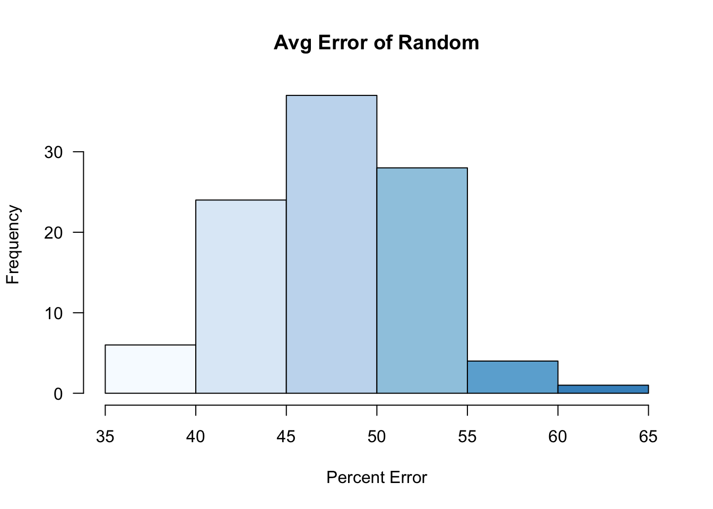
#lines(density(avg_allrandom),lwd=1)
mean(avg_allrandom)[1] 47.6619sd(avg_allrandom)[1] 4.82207
sessionInfo()R version 3.6.1 (2019-07-05)
Platform: x86_64-apple-darwin15.6.0 (64-bit)
Running under: macOS Catalina 10.15.5
Matrix products: default
BLAS: /Library/Frameworks/R.framework/Versions/3.6/Resources/lib/libRblas.0.dylib
LAPACK: /Library/Frameworks/R.framework/Versions/3.6/Resources/lib/libRlapack.dylib
locale:
[1] en_US.UTF-8/en_US.UTF-8/en_US.UTF-8/C/en_US.UTF-8/en_US.UTF-8
attached base packages:
[1] parallel stats graphics grDevices utils datasets methods
[8] base
other attached packages:
[1] workflowr_1.6.2 dplyr_0.8.3 ropls_1.16.0
[4] Biobase_2.44.0 BiocGenerics_0.30.0 mixOmics_6.8.3
[7] lattice_0.20-38 MASS_7.3-51.4 factoextra_1.0.5
[10] ggplot2_3.2.1
loaded via a namespace (and not attached):
[1] tidyselect_0.2.5 xfun_0.9 purrr_0.3.2
[4] reshape2_1.4.3 colorspace_1.4-1 vctrs_0.2.0
[7] htmltools_0.3.6 yaml_2.2.0 rlang_0.4.0
[10] ggpubr_0.2.3 later_0.8.0 pillar_1.4.2
[13] glue_1.3.1 withr_2.1.2 RColorBrewer_1.1-2
[16] matrixStats_0.55.0 lifecycle_0.1.0 plyr_1.8.4
[19] stringr_1.4.0 ggsignif_0.6.0 munsell_0.5.0
[22] gtable_0.3.0 evaluate_0.14 labeling_0.3
[25] knitr_1.24 httpuv_1.5.2 rARPACK_0.11-0
[28] Rcpp_1.0.2 corpcor_1.6.9 promises_1.0.1
[31] scales_1.0.0 backports_1.1.4 fs_1.3.1
[34] RSpectra_0.15-0 gridExtra_2.3 ellipse_0.4.1
[37] digest_0.6.20 stringi_1.4.3 ggrepel_0.8.1
[40] grid_3.6.1 rprojroot_1.3-2 tools_3.6.1
[43] magrittr_1.5 lazyeval_0.2.2 tibble_2.1.3
[46] crayon_1.3.4 whisker_0.4 tidyr_1.0.0
[49] pkgconfig_2.0.2 zeallot_0.1.0 Matrix_1.2-17
[52] assertthat_0.2.1 rmarkdown_2.3 R6_2.4.0
[55] igraph_1.2.4.1 git2r_0.27.1 compiler_3.6.1